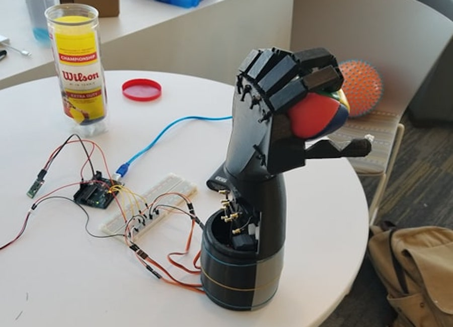

I am currently studying Computer Science with a minor in Mathematics at The University of South Florida where I've had the honor of trying out a plethora of research opportunities. I've been a part of both the Computational Biophysics Lab and Intelligent Systems Lab here at USF, but now I'm currently working on projects in the Social Computing Research Lab and Neuro Machine Interaction Lab. Due to my love of learning I have had a lot of varying interests throughout the years, but my most burning passion is the mind. I want to explore Artificial Intelligence in order to develop a better understanding of Natural Intelligence.
I am interested in enabling machines to make sense of the high-dimensionality of the real-world, at both large and small timescales, in order to one day have the ability to act intelligently and autonomously over a variety of complex sensorimotor tasks on par with human intelligence. The areas which have currently captured most of my time are robotics and machine learning, specifically deep learning, meta-learning, hierarchical reinforcement learning, and the areas in which these intersect. I believe further development in these areas play an important role in what is to come and can lead to a better understanding of the nature of intelligence. Email: wmcclinton(at)mail.usf.edu
Projects
BCI Hand

This BCI Hand was an extension of a thingiverse project we found for a prosthetic hand. We then adapted it to use 4 motors for better control and controlled it via brainwaves from an OpenBCI headset. Processing and control was done by my computer.
The Fix8 mobile app uses a Muse Headset to interpret brainwaves and quantify focus and drowsiness. Based on data received and user preferences, Fix8 sends notifications with sound or vibration that tell the user if they have dipped below focus or drowsiness thresholds.
Recently, we ran across a Tumbler post about the idea of adopting elderly people who have no close family members to take care of them. Legacy is a mobile app that matches youth with senior citizens in elderly homes based on common goals, interests and location.
This was an implementation of the MENACE matchbox algorithm for Rock, Paper, Scissors. It was made for a USF Honors Workshop with the intention of introducing students to programing in python and machine learning ideas. This was based on an amaizing video I saw by Matt Parker.
I am a huge fan of John Conway and I love making art with math. This code transforms your PNGs onto a John Conway Game of Life board so you can see your pictures come to life. The board and other files were made with Turtle graphics for Tkinter in Python.
Speech2code is a computer application that allows users to program hands-free. It uses the Sphynx speech recognition library to identify the key words spoken by the user and then matches it to its relatively small database of code snipets.
4. Minakshi, M., Bharti, P., Chellappan, S., McClinton, W., Mirzakhalov, J. (2019). Automatic Tagging and Uploading of Mosquito Genus, Species, and Anatomy with Mobile Devices using Deep Learning. (In preparation)
2. McClinton, W., Garcia, S., Marvin, A. (2019). Brain Painting in Virtual Reality: The effect of immersive VR environments on Brain Painting. HCI International 2019 Proceedings; Orlando, FL. doi: TBD (Accepted)
3. McClinton, W., Caprio, D., Laesker, D., Pinto, B., Garcia, S., and Andujar, M. (2019). P300-Based 3D Brain Painting in Virtual Reality. In Extended Abstracts of the 2019 CHI Conference on Human Factors in Computing Systems (CHI EA '19). ACM, New York, NY, USA, Paper LBW1119, 6 pages.
1. Awad, G., et al. (2017). Trecvid 2017: Evaluating ad-hoc and instance video search, events detection, video captioning and hyperlinking. Proceedings of TRECVID 2017. doi:10.na


.png)
.png)
.png)